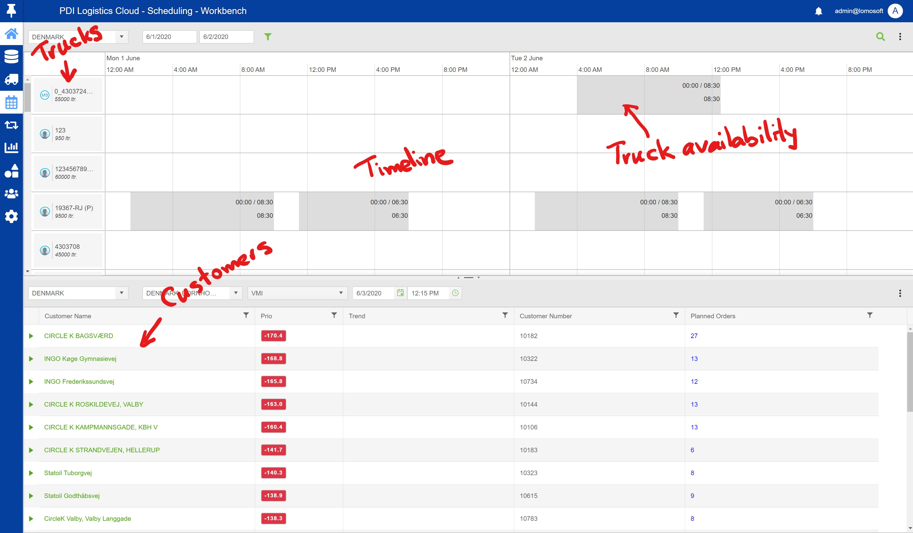
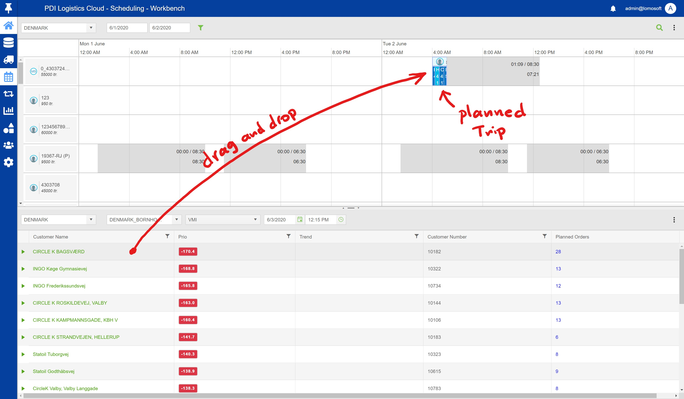
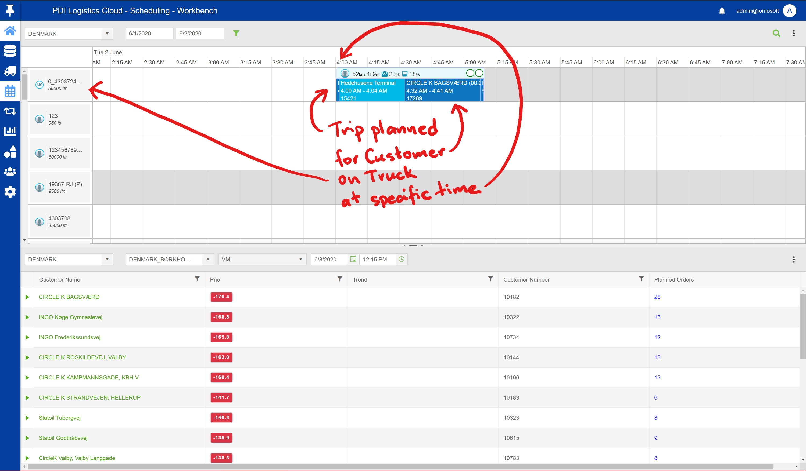

PlaBot is an AI enabled chat bot that assists Dispatchers in planning Trips in PDI Logistics Cloud (PLC) application.
Currently the Dispatcher is planning Trips using PLC via drag and drop.
Initially the Dispatcher sees a list of available Trucks, the timeline and a list of gas stations (Customers). The Priority is showing how urgent a Customer needs a Product.
The Dispatcher decides to send a Product (or more) to a specific Customer by drag and dropping the respective Customer to an available period of time shown along a specific Truck.
The decision to plan a specific Customer takes in consideration multiple variables: Priority, available Trucks, dynamic of Products consumption at Customer level and very often is influenced by the Dispatcher's flair and experience.
PlaBot's ultimate goal is to replace the human Dispatcher in planning Trips.
PlaBot is basically a chat bot embedded in PLC's planning page. Initially (see bellow) it will offer help to the user based on text interaction, later evolving to support voice (both Speech Recognition and Text-to-speech) and ultimately doing the dispatcher's job of planning Trips.
PlaBot's development stages are as follows:
This project proposes to develop PlaBot until the Junior Dispatcher phase, making sure that it lays a foundation and gathers data necessary for further development.
In this stage PlaBot is acting more like an assistant offering help for beginner Dispatchers.
PlaBot acts more like an online help system; the human Dispatcher can type questions in a chat window and PlaBot answers these questions.
Examples: "How can I choose the columns I want to see for Customers?" or "How is the trend calculated?"
This is a continuous process, PlaBot must be teached new things on a regular basis.
PlaBot is doing the same tasks but now he can listen and answer via voice and not only chat.
PlaBot can perform simple tasks, like "Search for Trip 123" or "I want to hide Priority column".
The goal for this stage is to enable PlaBot to plan a Trip on command ("PlaBot, please plan a Trip to Customer Statoil Tuborgvej on Truck 4303 for Monday morning."
This is an action PlaBot will do continuously and not a stage itself. It is shown here because it's absolutelly necessary before the next stages.
Spying means that PlaBot will save the data generated by the Dispatcher. The saving occurs anyway, but PlaBot will extract only the relevant data and save it in separate structures for easier further analysis.
For the scope of this project it will be enough to save the following data:
In this stage PlaBot is able to plan more and more complex Trips and asks for confirmation from the human Dispatcher.
Some scores (what means a Trip is more efficient than another?) must be defined after discussions with business analysts and dispatchers.
PlaBot will save additionally its own proposed planning and also the adjusted Trips. He will use this as a seconday source for learning.
In this stage PlaBot will be able to do the most work of a Dispatcher.
This stage must be reached as a self development from the previous stage, only by means of learning and not programming.
Will make use of the following technologies: